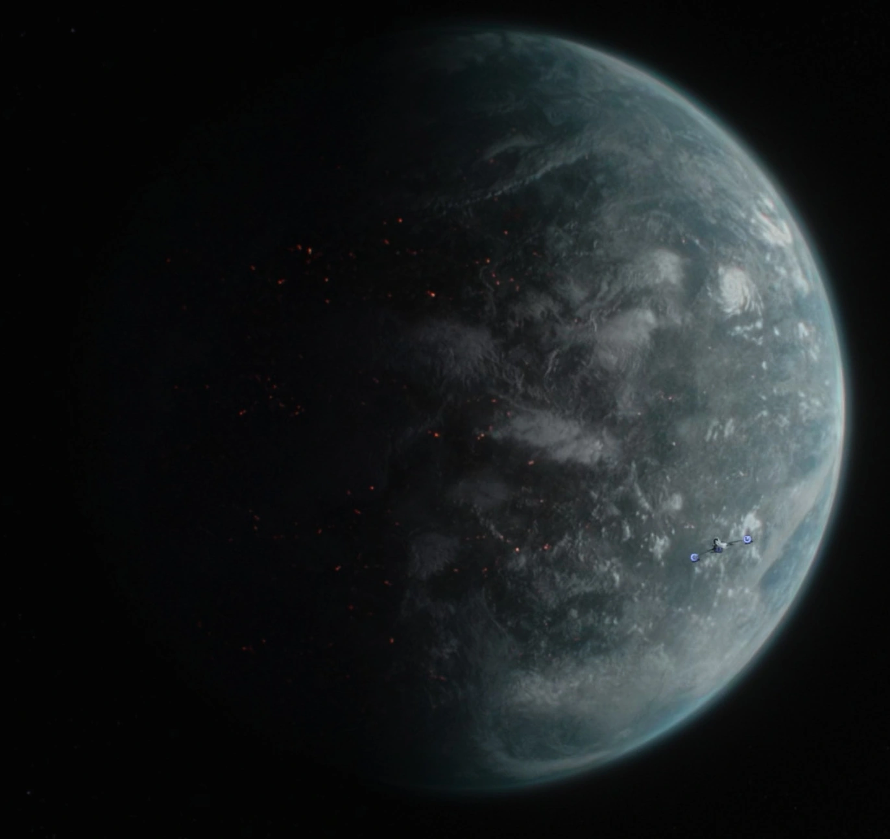
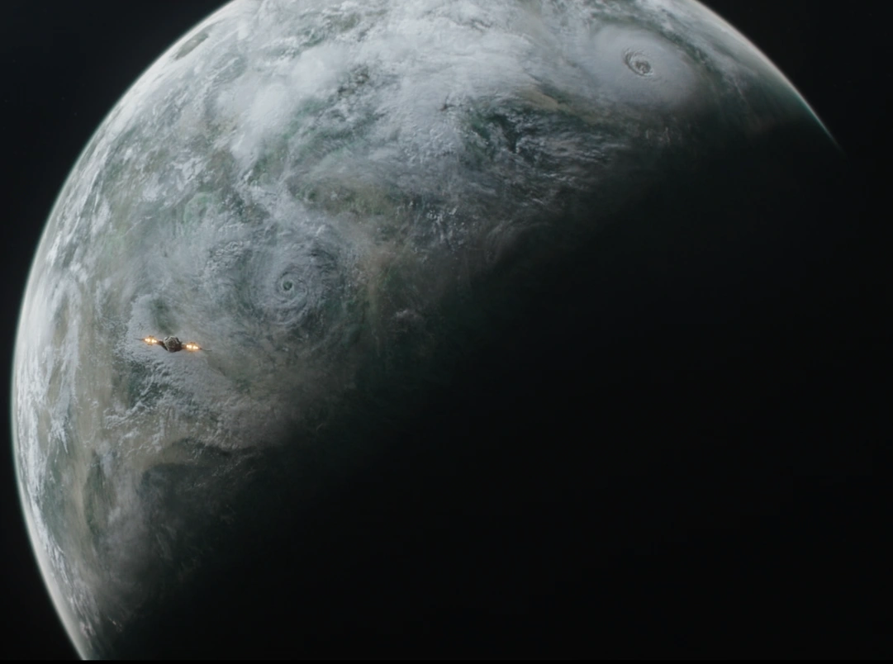
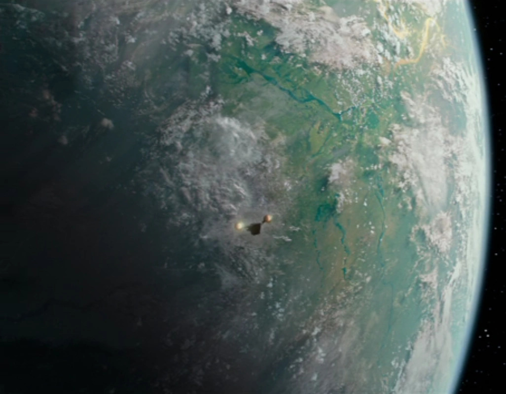
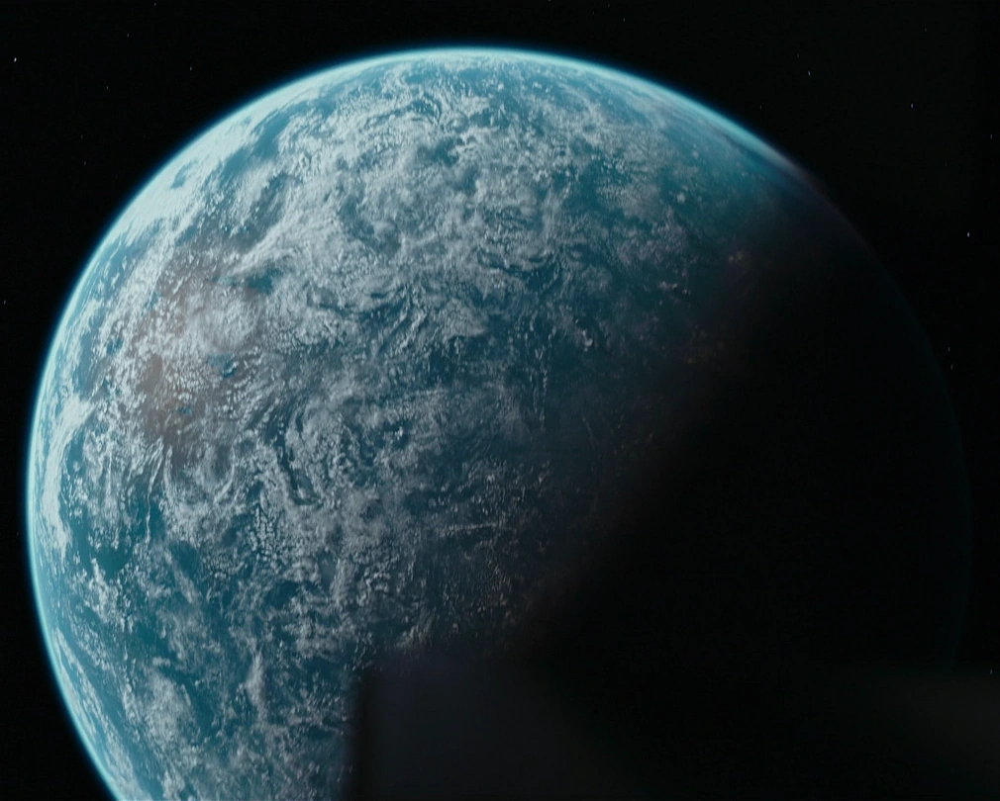
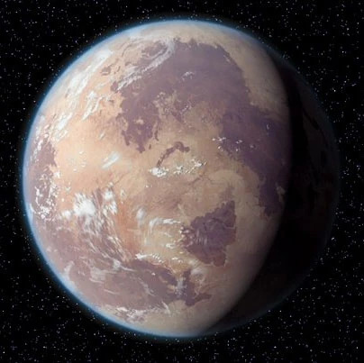

Lieux
Nevarro

{kind=link}
Nevarro était une planète rocheuse et volcanique des Territoires de la Bordure Extérieure. Elle abritait la ville de Nevarro City, dans laquelle se trouvait plusieurs bâtiments dont une cantina servant de lieu de rendez-vous pour les membres de la guilde des chasseurs de primes, un complexe occupé par un Vestige de l'Empire et une Enclave Mandalorienne. Des bains Twi'lek se trouvaient aussi sur ce monde.
Mandalore
{kind=link}
Mandalore était une planète de la Bordure Extérieure. Elle était le monde d'origine des Mandaloriens, un peuple guerrier et téméraire qui affronta les Jedi et mit à sac leur temple pendant la chute de l'Ancienne République. Ces guerriers portaient des armures distinctives et étaient craints à travers la galaxie. Des années de guerre laissèrent la planète inhospitalière, forçant les Mandaloriens à vivre au sein de villes protégées par des dômes. Un gouvernement pacifique, mené par la duchesse Satine Kryze, arriva au pouvoir au terme d'une guerre civile qui décima la majorité de la population. Les insurgés furent exilés sur la lune Concordia. Pendant la Guerre des Clones, les Nouveaux Mandaloriens furent renversés par le Collectif des Ombres de Dark Maul. Sous le règne de l'Empereur Galactique Sheev Palpatine, Mandalore était gouvernée par l'Empire Galactique.
Sorgan
{kind=link}
La planète Sorgan était un monde forestier des Territoires de la Bordure Extérieure sur lequel se trouvaient de vastes étendues d'arbres. On pouvait également y trouver de nombreuses rivières et fleuves ainsi que des marais. Peu peuplée et ne possédant pas de spatioports ni de centres industriels, la planète abritait seulement quelques petits villages disséminés à sa surface. Ainsi, sous l'ère de la Nouvelle République, une communauté de fermiers peuplait un village isolé de la planète où ils y élevaient du krill et brassaient de la spotchka.
Trask
{kind=link}
Trask était une lune portuaire de la Bordure Extérieure située dans le système de Kol Iben où vivaient en paix des Quarrens et Mon Calamari. Les habitants vivaient de la pêche, mais pas seulement. En effet, avec la Guerre Civile Galactique et la chute de l'Empire, Trask était devenu un haut lieu du marché noir. Notamment, depuis la Grande Purge, des pilleurs revendaient sur Trask les armes volées sur Mandalore, ce qui intéressait tout particulièrement les Impériaux qui cherchaient à se reconstruire.
Tatooine
{kind=link}
Tatooine était un monde désertique situé dans le secteur Arkanis de la Territoires de la Bordure Extérieure. Des fossiles laissaient penser aux scientifiques que Tatooine avait été recouverte par un océan à l'instar de Kamino. La planète fut colonisée par des corporations minières qui pensaient que la planète était riche en minerais. Cependant, lorsqu'elles découvrirent que ce n'était pas le cas, ces corporations plièrent bagages et laissèrent leurs ouvriers sur la planète. Depuis, Tatooine est devenu le repaire des hors-la-loi et le fief du Hutt Jabba Desilijic Tiure. La planète est également devenue connue pour ses courses de modules comme la Classique de Boonta Eve. Les Jawa, un peuple de ferrailleur, et les Tusken, un peuple de guerriers sanguinaires, étaient des espèces originaires de la planète.